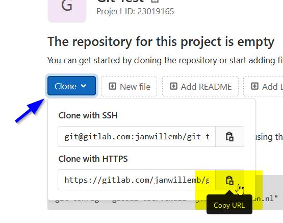
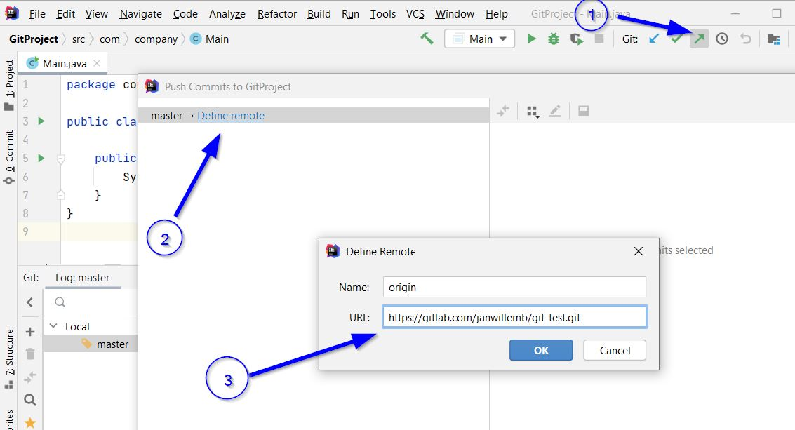
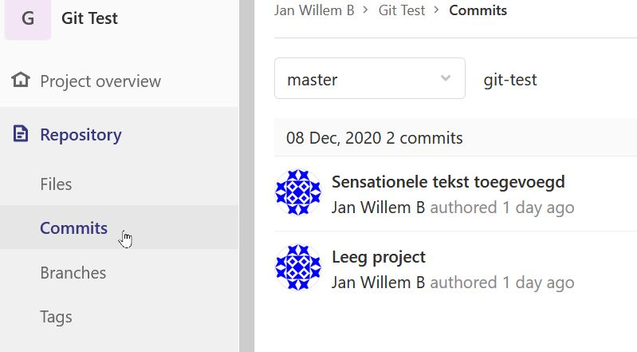
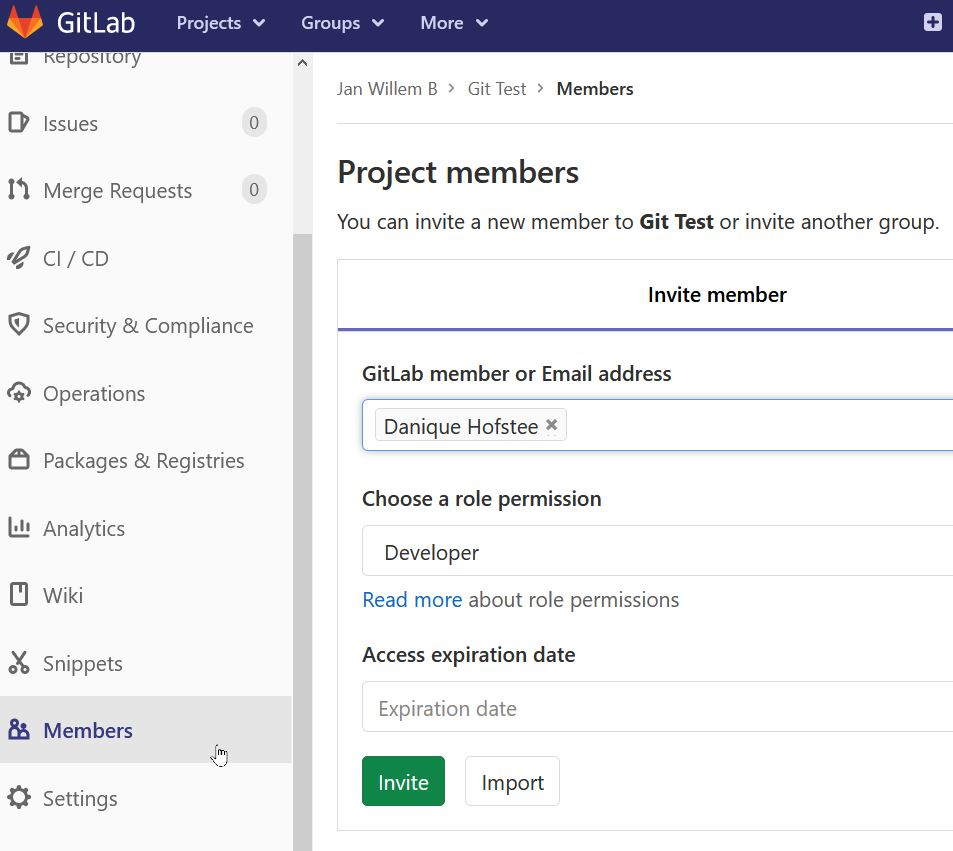
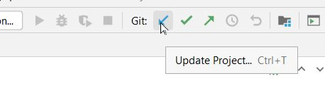
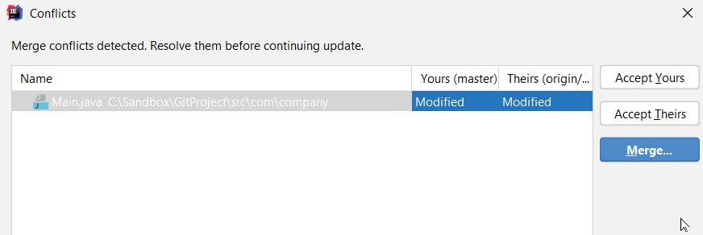

If you didn't have it open yet: open your Java project with the git repository from the previous instruction in IntelliJ.
You first make repository on Gitlab to be able to work together.
You will now see a page of the empty project with some commandline instructions. You now need the git URL of the project. To do this, click on the "Clone" button and click on the "Copy URL" button at "Clone with https":

Go back to your project in Intellij. Here we are now going to push your local git commits to the Remote Repository on Gitlab.

If you now go to your Gitlab repository, you will see your last code at Repository> File. At Repository > Commits you see all your commits.

You can now invite other people to "Members" to your repository. Click on "Members", find the person you want to invite, and make that person developer. Press "Invite" to send the invite.

If you want to work in someone else's project, you need the Gitlab URL, as you can find under the "Clone" button at "Clone with https". Copy this URL (which ends with .git)
Make a new project in Intellij:
You will now receive the repository to your own PC with all the other commits.
You can now commit as you can do with your own project.
Press the "Update Project" button (pull) to fetch the changes of others to your own local directory. It is best to always do this before you push.

If there are conflicts with changes that you have made yourself, you will get the choice per file:

If you have resolved conflicts (merged), then you have to commit this merge again, because the merge itself results in changes again.
If there are no more conflicts, press the "Push" button to publish your own commits to Gitlab.